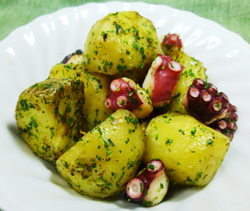

ジャガ芋とタコの
エシャロット炒め
エシャロット炒め
- 調理時間：30 分
- （一人当たり）
- カロリー：319kcal
- たんぱく質：13.4g
- 脂質：15.5g
- 塩分：1.1g


＜２人分＞
- ジャガ芋
- 2個
- ゆでタコ
- 100g
- エシャロット
- 4株
- 油
- 大さじ2
- パセリ（みじん切り）
- 大さじ2
- 塩
- 小さじ1/3
- コショウ
- 少々


- 鍋に水を入れ、ジャガ芋は皮つきのまま水から茹でる。（電子レンジでもよい）
- ①のジャガ芋は１/２～１/４に切る。エシャロットは根の部分をみじん切りにする。
パセリはみじん切りにする。ゆでタコは一口大に切る。 - フライパンに油をしき、エシャロットを加えて香りが出るまで炒める。
- ジャガ芋を中火で炒める。焼き色がついたら、ゆでタコを加えてさらに炒める。
- 塩、コショウを加えて味をととのえ、仕上げにみじん切りのパセリを加えて全体を混ぜ合わせて出来上がり。
ジャガ芋とタコのエシャロット炒め
エシャロットは玉ねぎと同じように鱗茎部分を調理します。消化酵素の成分も含まれますので、この時期疲れた胃腸にもってこいの食材です。独特の香りと苦みには食欲増進、発汗、消炎作用があります。香味野菜として、きざんだり、すりおろして使うとよいでしょう。
エシャロットには、血液サラサラ効果のある硫化アリルが含まれますが、タウリンの豊富なタコを一緒にとると、動脈硬化予防が期待できます。さらに、ビタミンB1の利用率を高めるはたらきをもつことが特徴です。
タコはタウリンが豊富です。タウリンはコレステロール低下、心臓機能の強化など各種の作用があることで知られています。また、タウリンには肝機能を強化するはたらきがあるため、お酒を飲む際に食べ合わせることで、二日酔い予防の効果もあります。